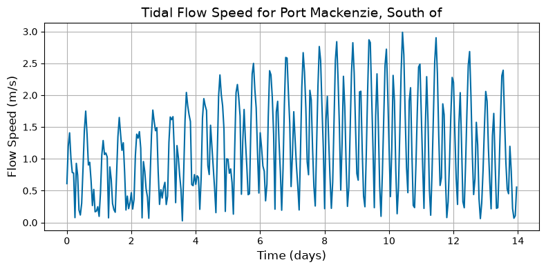
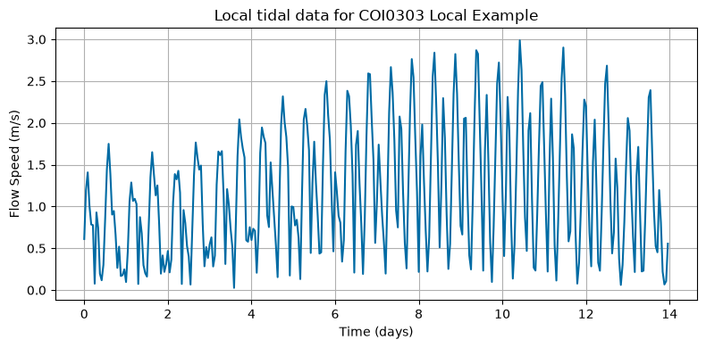

Tutorial 2: Acquiring Tidal Data (module_tidal)
This tutorial demonstrates how to retrieve and process tidal resource data using the process_tidal_data function in vital.module_tidal.
The tutorial covers:
Importing required modules.
Defining a NOAA station and time range.
Processing tidal data.
Inspecting processed tidal metadata.
Visualizing tidal flow speeds.
A short optional local-file example is included at the end of the tutorial for users who want to work without NOAA access.
Notes for new users
Flow speeds are returned in meters per second.
Time is returned in seconds from the beginning of the requested period.
NOAA current prediction speeds are converted from cm/s to m/s.
Flow speeds are converted to nonnegative values using
abs.A small minimum flow-speed floor is applied internally to avoid numerical issues.
NOAA API requests can fail because of internet connectivity, NOAA service availability, certificate handling, or station/date limitations.
[1]:
import numpy as np
import matplotlib.pyplot as plt
import urllib3
from vital.module_tidal import process_tidal_data
# Suppress warnings caused by NOAA requests using verify=False internally.
# This avoids noisy notebook output.
urllib3.disable_warnings(urllib3.exceptions.InsecureRequestWarning)
1. Define input parameters
Set the NOAA station identifier and the start date for tidal data retrieval.
You can find NOAA current station information here:
NOAA Currents: https://tidesandcurrents.noaa.gov/noaacurrents/
Alaska stations: https://tidesandcurrents.noaa.gov/noaacurrents/stations.html?g=693
The startdate should be provided in NOAA-compatible format.
For this example, we use:
station = "COI0303"startdate = "2021-09-01"range_hrs = 2 * 7 * 24, corresponding to two weeks.time_step_s = 3600, corresponding to one-hour spacing.
The city data file is used to estimate the nearest city and a simplified cable length.
[2]:
station = "COI0303"
startdate = "2021-09-01"
range_hrs = 2 * 7 * 24
time_step_s = 3600
# The default process_tidal_data path is "../data/AlaskaCityLatLong.txt".
# Here we make it explicit so users know where the city metadata comes from.
city_data_file = "../data/AlaskaCityLatLong.txt"
2. Process tidal data from NOAA
The simplest workflow is to call process_tidal_data with the station, start date, time range, and time step.
In this section, VITAL retrieves tidal data from NOAA. A separate optional local-file example is provided later in the tutorial.
The function returns a TidalResults dataclass with the following fields:
flow_speeds: processed flow speeds in m/stimes: time vector in secondsmooring_distance: mooring depth/distance in mlatitude: station/buoy latitude in radianslongitude: station/buoy longitude in radiansstation_name: station namenearest_city: nearest city estimated from the city data filecable_length: estimated electrical cable length in msource: data source used, such as"NOAA"or"local_file"
[3]:
results = process_tidal_data(
station=station,
startdate=startdate,
range_hrs=range_hrs,
time_step_s=time_step_s,
city_data_file=city_data_file,
)
print(f"Data source used: {results.source}")
Data source used: NOAA
3. Inspect the processed tidal data
The returned object stores both the time-series resource data and site metadata.
[4]:
print(f"Data source: {results.source}")
print(f"Station Name: {results.station_name}")
print(f"Nearest City: {results.nearest_city}")
print(f"Mooring Distance (m): {results.mooring_distance}")
print(f"Cable Length (m): {results.cable_length}")
print(f"Buoy Latitude (rad): {results.latitude}")
print(f"Buoy Longitude (rad): {results.longitude}")
print(f"Buoy Latitude (deg): {np.degrees(results.latitude)}")
print(f"Buoy Longitude (deg): {np.degrees(results.longitude)}")
print()
print(f"Number of time samples: {len(results.times)}")
print(f"Number of flow-speed samples: {len(results.flow_speeds)}")
print(f"Minimum flow speed (m/s): {min(results.flow_speeds):.4f}")
print(f"Maximum flow speed (m/s): {max(results.flow_speeds):.4f}")
Data source: NOAA
Station Name: Port Mackenzie, South of
Nearest City: Anchorage
Mooring Distance (m): 31.1
Cable Length (m): 3970.22
Buoy Latitude (rad): 1.0690534367546967
Buoy Longitude (rad): -2.6166093082958874
Buoy Latitude (deg): 61.25225
Buoy Longitude (deg): -149.92067000000003
Number of time samples: 336
Number of flow-speed samples: 336
Minimum flow speed (m/s): 0.0265
Maximum flow speed (m/s): 2.9882
4. Plot flow speeds
The time vector is stored in seconds. For plotting, we convert seconds to days.
[5]:
plt.figure(figsize=(8, 4))
plt.plot(results.times / (3600 * 24), results.flow_speeds)
plt.xlabel("Time (days)", fontsize=12)
plt.ylabel("Flow Speed (m/s)", fontsize=12)
plt.title(f"Tidal Flow Speed for {results.station_name}", fontsize=14)
plt.grid(True)
plt.tight_layout()
plt.show()

5. Optional: Load tidal data from a local file
NOAA data access may fail because of network restrictions, NOAA API availability, station limitations, or certificate handling.
This optional section shows how to load tidal data directly from a local file. This bypasses NOAA and is useful for reproducible examples or offline use.
The local tidal file must be whitespace-delimited and contain at least two columns:
Column |
Meaning |
|---|---|
|
Time in seconds |
|
Flow speed in m/s |
Example local file format:
t U
0 0.85
3600 1.10
7200 0.95
10800 0.40
When loading a local file directly, the time vector comes from the t column in the file. When using a local tidal file, the user must also provide metadata because the station information is no longer coming from NOAA.
station_namelatitude_deglongitude_degmooring_distance_m
Optional metadata keys are:
nearest_citycable_length_m
If city_data_file is supplied, the software will attempt to compute the nearest city and cable length from the fallback latitude and longitude.
If this automatic calculation succeeds, it may replace the optional nearest_city and cable_length_m values supplied in fallback_metadata.
[6]:
from pathlib import Path
from vital.module_tidal import TidalData, TidalResults
# Example local tidal file.
# Update this path if you want to use a different local dataset.
local_file = "../data/TidalData/COI0303_20210901.txt"
fallback_metadata = {
"station_name": "COI0303 Local Example",
"nearest_city": "Port Mackenzie",
"latitude_deg": 61.2522,
"longitude_deg": -149.9207,
"mooring_distance_m": 50.0,
"cable_length_m": 1000.0,
}
if Path(local_file).exists():
local_tidal_loader = TidalData(
station=station,
startdate=startdate,
range_hrs=range_hrs,
time_step_s=time_step_s,
)
local_results_tuple = local_tidal_loader.load_local_tidal_data(
local_file=local_file,
fallback_metadata=fallback_metadata,
city_data_file=city_data_file,
)
local_results = TidalResults(*local_results_tuple)
print(f"Data source: {local_results.source}")
print(f"Station Name: {local_results.station_name}")
print(f"Nearest City: {local_results.nearest_city}")
print(f"Mooring Distance (m): {local_results.mooring_distance}")
print(f"Cable Length (m): {local_results.cable_length}")
print(f"Latitude (deg): {np.degrees(local_results.latitude)}")
print(f"Longitude (deg): {np.degrees(local_results.longitude)}")
print(f"Number of time samples: {len(local_results.times)}")
print(f"Minimum flow speed (m/s): {min(local_results.flow_speeds):.4f}")
print(f"Maximum flow speed (m/s): {max(local_results.flow_speeds):.4f}")
plt.figure(figsize=(8, 4))
plt.plot(local_results.times / (3600 * 24), local_results.flow_speeds)
plt.xlabel("Time (days)")
plt.ylabel("Flow Speed (m/s)")
plt.title(f"Local tidal data for {local_results.station_name}")
plt.grid(True)
plt.tight_layout()
plt.show()
else:
print(
"No local fallback file found. "
"To test local mode, create a whitespace-delimited file with columns 't' and 'U'."
)
Data source: local_file
Station Name: COI0303 Local Example
Nearest City: Anchorage
Mooring Distance (m): 50.0
Cable Length (m): 3965.33
Latitude (deg): 61.2522
Longitude (deg): -149.9207
Number of time samples: 336
Minimum flow speed (m/s): 0.0265
Maximum flow speed (m/s): 2.9882
